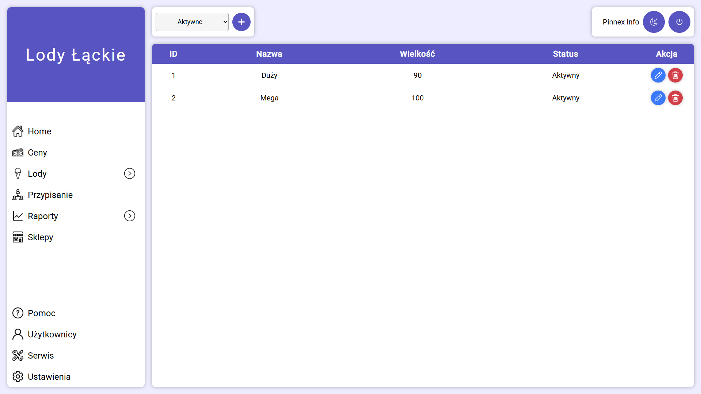
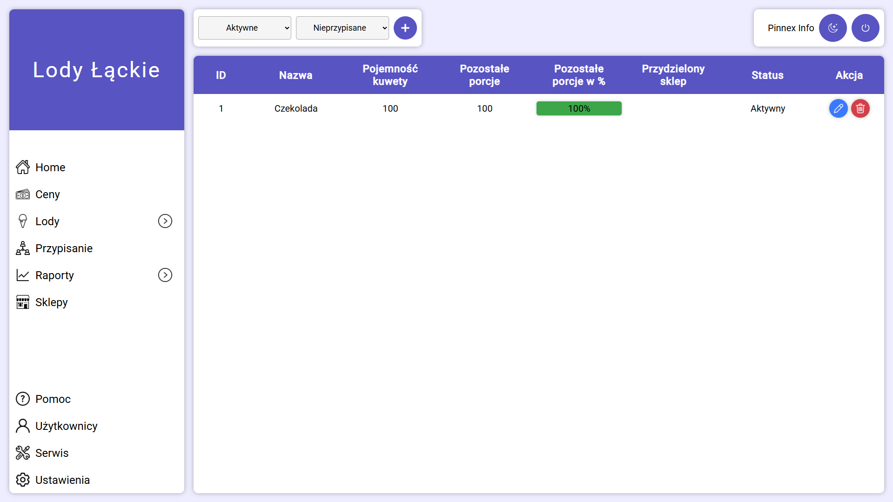
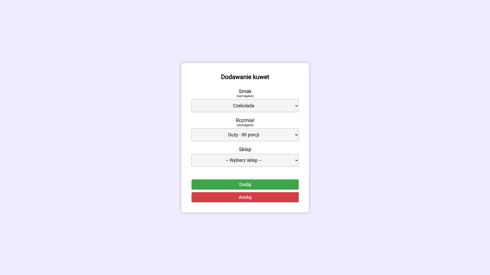
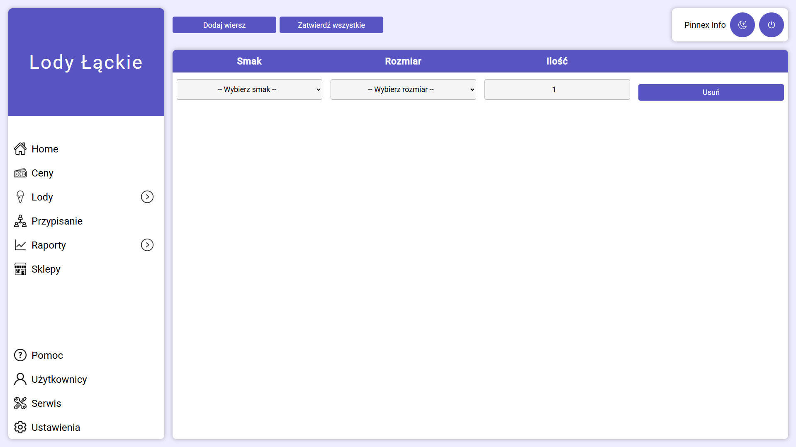
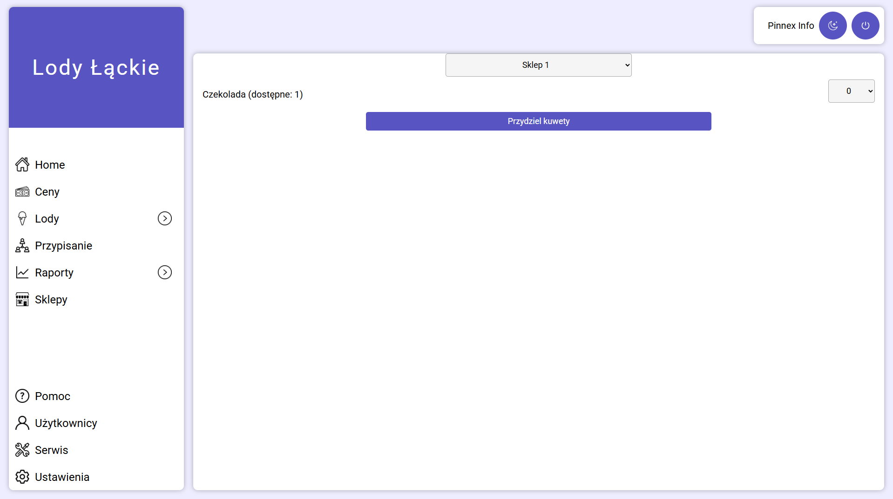
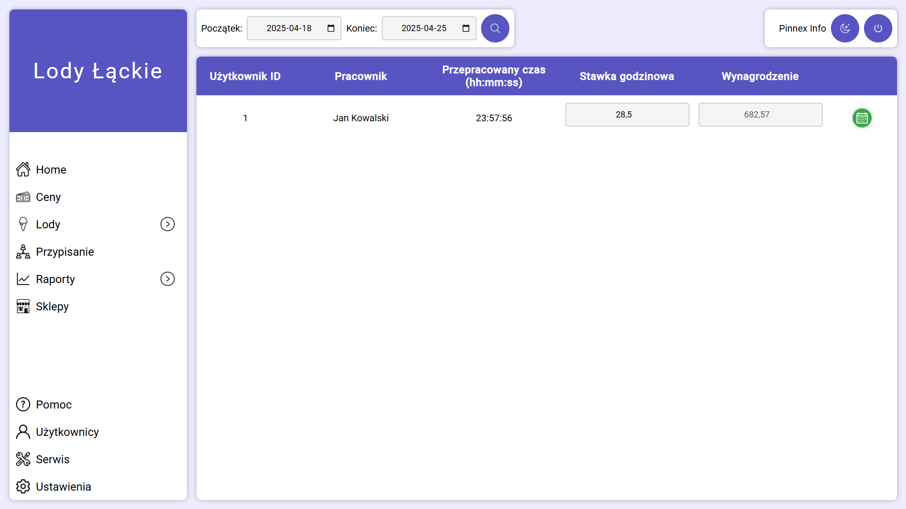
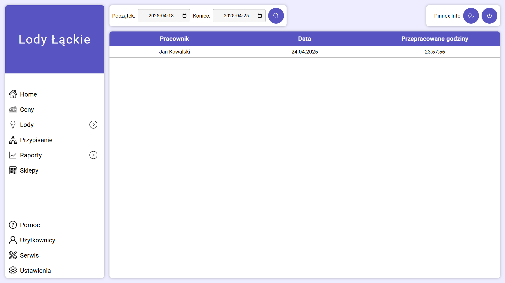
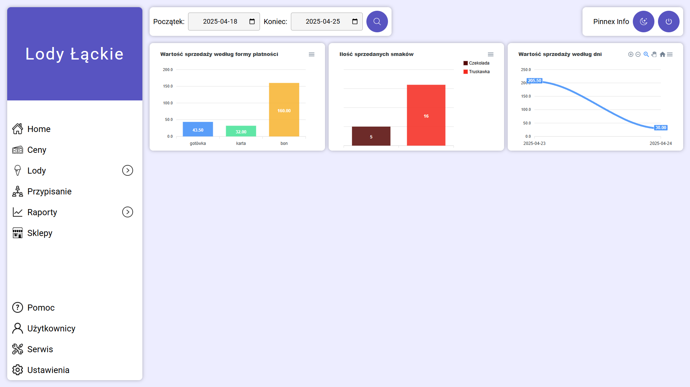
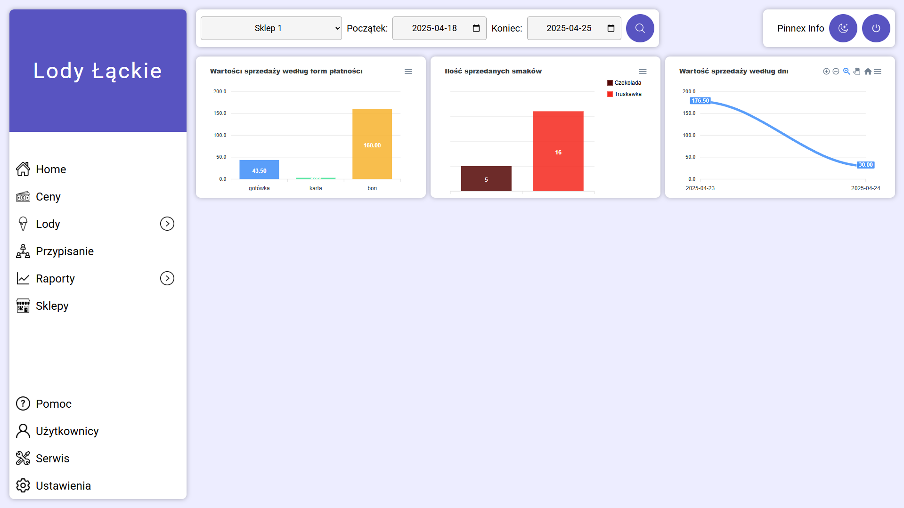
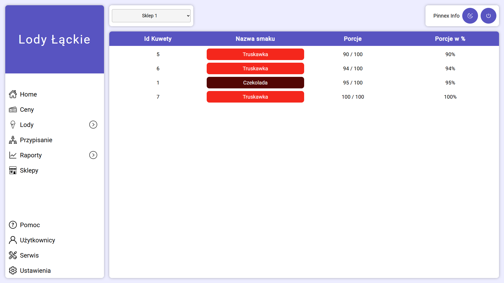

Do poprawnego działania aplikacji niezbędne jest skonfigurowanie
połączenia do bazy danych oraz stworzenie odpowiednich table w
programie.
Konfigurację aplikacji przeprowadza technik!
Konfiguracja
przez użytkownika odbywa się na własną odpowiedzialność!
Pierwszym krokiem do konfiguracji aplikacji jest ustawienie
połączenia do bazy danych:
- Serwer
- Port
- Użytkownik
- Hasło
- Baza danych
Po uzupełnieniu powyższych danych należy przeprowadzić test
połączenia przyciskiem poniżej. Jeśli test wypada poprawnie to
należy zapisać ustawienia i zrestartować aplikację lub serwer.
Jeśli ustawienia są zapisane należy przejśc do zakładki Serwis i
kontynuować dalsze kroki

Aplikacja Lody Łąckie umożliwia dwa sposoby logowania w
zależności od typu użytkownika:
Logowanie odbywa się na stronie startowej aplikacji, gdzie
użytkownik może wybrać odpowiednią metodę uwierzytelniania.
Logowanie do Centrali Użytkownicy uprawnieni do zarządzania
systemem (np. administratorzy, osoby z centrali) logują się za
pomocą loginu i hasła.
- Wypełnij pole Login – wpisz swój login użytkownika
- Wypełnij pole Hasło – wpisz przypisane hasło
- Kliknij przycisk Zaloguj
Po poprawnym zalogowaniu zostaniesz przekierowany do panelu
zarządzania.
- Wybierz sklep z listy rozwijanej Sklep
-
Wprowadź PIN za pomocą klawiatury ekranowej lub klawiatury
urządzenia
-
Kliknij przycisk Strzałki na klawiaturze ekranowej lub
zatwierdź PIN w systemie
Poprawna weryfikacja PIN-u przekieruje użytkownika do modułu
sklepowego.
Aplikacja wspiera tryb ciemny, który może być aktywowany za
pomocą przycisku z ikoną księżyca w prawym górnym rogu ekranu
logowania. Po przełączeniu motywu, preferencja jest zapisywana w
przeglądarce i utrzymuje się przy kolejnych uruchomieniach.

Interfejs aplikacji po stronie centrali opiera się na kilku
podstawowych elementach:
- Nawigacja
Po lewej części ekranu znajduje się menu nawigacyjne, które
umożliwia poruszanie się pomiędzy zakładkami aplikacji.
Obecnie otwarta strona posiada podświetloną zakładkę.
Jeżeli przy zakładce menu widnieje znacznik:
 oznacza to, że pod zakładką znajdują się dodatkowe opcje
dostępne po kliknięciu.
oznacza to, że pod zakładką znajdują się dodatkowe opcje
dostępne po kliknięciu.
- Menu użytkownika
W górnej, prawej części ekranu znajduje się menu
użytkownika. Znajduje się na nim informacja o aktualnie
zalogowanym użytkowniku oraz dwa przyciski. Pierwszy z nich
umożliwia zmianę motywy na ciemny lub jasny, drugi przycisk
odpowiada za wylogowanie użytkownika i przekierowanie go na
stronę logowania.
Dla każego użytkownika tworzona jest sesja, która po
minieciu 8 godzin automatycznie wyloguje użytkownika i
będzie się trzeba ponownie zalogować.
- Filtrowanie
Nad każdym widokiem głównym o ile jest taka mozliwośc
znajduje się panel filtrowania. Odpowiada on za filtrowanie
np. aktywnych użytkowników, lub usuniętych których można
przywracać
- Dodawanie
Jeżeli istnieje taka możliwość dla danej zakładki programu,
obok listy rozwijanej z filtrowaniem widnieje przycisk
dodawania z ikoną:
 , która odpowiada za dodawanie nowych elementów do
zakładki.
, która odpowiada za dodawanie nowych elementów do
zakładki.
- Ekran główny
Ekran główny odpowiada za wyświetlanie danych na
poszczególnych zakładkach np. użytkowników, smaków, kuwet. W
zależności od wybranej zakładki z menu nawigacyjnego.

W zakładce
Użytkownicy widzimy
istniejących użytkowników, którzy są stworzeni przez
administratora systemu lub serwis.
Można edytować ich dane wciskając
niebieski okrągły przycisk
obok ich danych. W skutek otwiera się okno edycji użutkownika
i można zmieniać jego dane personalne.
Użytkowników można również usuwać, a dokładniej ustawiać jako
nieaktywnych co uniemożliwi im zalogowanie się do systemy po
stronie centrali oraz sklepu. Usuwanie użytkowników odbywa się
poprzez wciśnięcie
czerwonego okrągłego przycisku
oraz potwierdzenia usunięcia użytkownika

Pierwszą czynnością po zalogowaniu się użytkownika to
utworzenie danych punktów sprzedażowych. Odbywa się to poprzez
wciśnięcie przycisku dodawania opisanego w zakładce
Centrala-Interfejs
Stworzenie punktów sprzedażowych jest niezbędne do
raportowania sklepów dla danego użytkownika, tworznie numerów
dokumentów przy wydaniach oraz tworzenia RCP

Aby przypisać użytkownika do sklepu bądź wielu sklepów należy
wybrać zakładkę przypisanie. Zostaniemy przeniesieni na widok
umieszczony powyżej.
W celu przypisania użytkownika na sklepu należy kolejno:
- Wybrać danego użytkownika z listy
-
Po wybraniu użytkownika pojawią się sklepy, do których
użytkownik nie został przypisany, należy je zaznaczyć za
pomocą checkboxa przy nazwie danego sklepu
-
Po upewnieniu się czy nie występują pomyłki wciśnięcie
przycisku
Przypisz
Przypisywanie użytkowników do sklepów odpowiada za przypisanie
ich do części centralnej!
Użytkownicy w module sklepowym
nie są przypisywani do sklepów z powodu rotacji

W zakładce Ceny można
przeglądać oraz edytować ceny sprzedawanych towarów. Aby
zmienić cenę danego towaru, nalezy w kolumnie
Cena wybrać pole dla towaru,
któremu chcemy zmienić cenę i kliknąć przycisk
Zapisz. Zostaną pobrane nowe
ceny dla towarów, poprzednia cena, która obowiązywała zostanie
przeniesiona do pola z kolumną
Poprzednia Cena. Dodatkowo
zostaje zapisana data oraz godzina zmiany ceny

Aby rozpocząć sprzedaż na punktach niezbędne jest
przypisywanie kuwet do sklepów, a do kuwet niezbędne są
definicje smaków. W zakładce rozwijanej
Lody znajduje się podrzędna
zakładka Smaki
Należy zdefiniować smaki, które będą dostępne do sprzedaży.
Aby to zrobić należy wybrać przycisk
Dodawania opisany w zakładce
Interfejs-centrala, który przeniesie nas do ekranu tworzenia
smaku.

Utworzenie smaku wykonuje się tylko w przypadku pierwszej
konfiguracji programu przez użytkonwika lub w przypadku
wprowadzenia nowego smaku do oferty
Odbywa się to w nastepujących krokach:
-
Podanie nazwy smaku - nazwa musi być unikalna. W przeciwnym
wypadku aplikacja powiadomi użytkownika o powtarzającej się
nazwie smaku i uniemożliwi jego dodanie
- Wybranie koloru tła
- Wybranie koloru czcionki
-
Zapisanie smaku poprzez wciśnięcie przycisku
Dodaj

Drugim niezbędnym krokiem, aby rozpocząć sprzedaż na punktach
jest dodanie rozmiarów kuwet. Każda kuweta, która będzie
trafiała na sklep musi mieć swój rozmiar, aby aplikacja mogła
poinformować użytkownika o braku porcji w danej kuwecie.
Aby
przejść na zakładkę
Rozmiary należy z menu
nawigacyjnego wybrać Lody, a
następnie Rozmiary
W celu edytowania istniejących smaków należy wybrać
okrągły niebieski przycisk
obok rozmiaru, który chcemy edytować .
Chcąc usunąć rozmiar, należy wybrać
okrągły czerwony przycisk
oraz potwierdzić usunięcie rozmiaru .
Aby dodać nowy rozmiar kuwety należy wybrać przycisk
Dodawania, który przeniesie
użytkownika na ekran dodawania rozmiaru.

Tworzenie rozmiaru wymaga podania dwóch informacji:
-
Nazwy rozmiaru - jest to nazwa, która będzie wyświetlana
tworząc kuwety z lodami, aby można było przypisać kuwecie
rozmiar
-
Pojemność kuwety - wartość liczbowa całkowita, która określa
rozmiar kuwety, a dokładniej liczbę porcji, która może się w
niej znaleźć
Po wpisaniu obu powyższych informacji należy zapisać zmiany
wciskając przycisk Dodaj

Przedostatnim krokiem w centrali, który odpowiada za
przygotowanie do sprzedaży jest utworzenie kuwet. Pracownik na
dziale produkcji tworząc kuwety z lodami musi je wprowadzić do
systemu, aby była możliwość przydzielenia ich na sklepy i
rozpoczęcia sprzedaży
Każdą kuwetę podobnie jak w innych zakładkach można edytować
za pomocą
okrągłego niebieskiego przycisku
Oraz usuwać, wciskając
okrągły czerwony przycisk
Dodawać kuwety możemy na dwa sposoby:

-
Dodawanie pojedyncze - na zakładce
Kuwety wybrać przycisk
Dodawanie u góry ekranu
Zostaniemy przeniesieni do ekrany dodawania kuwet gdzie z
list rozwijanych wybieramy:
-
Smak kuwety - stworzony wcześniej w zakładce
Smaki
-
Rozmiar kuwety - stworzony wcześniej w zakładce
Rozmiary
-
Sklep - zdefiniowany wcześniej w zakładce
Sklepy - odpowiada on
za przypisanie kuwety dla sklepu. Jako jedyny nie jest
obowiązkowy na tej liście, sklep można przydzielić na
późniejszym etapie

-
Dodawanie zbiorcze - zakładka
Lody, a następnie
Kuwety Zbiorcze
Na ekranie dodawania kuwet zbiorczo widoczna jest tabela, w
której znajdują się kolumny
Smak,
Rozmiar,
Ilość, oraz przycisk
Usuń, który odpowiada za
usunięcie wiersza
Domyślnie na ekranie widoczny jest jeden wiersz, gdzie można
dodać kuwety. Jeśli chcemy ich dodać więcej na jednym etapie
należy z górnej części ekranu wybrać przycisk
Dodaj wiersz. Pojawi się
drugi wiersz do przypisania kolejnych kuwet.
Aby dodać kuwety należy uzupełnić następujące dane:
-
Smak - podobnie jak w
przypadku pojedynczej kuwety z listy zdefiniowanych
wcześniej smaków
-
Rozmiar - podobnie jak w
przypadku pojedynczej kuwety z listy zdefiniowanych
wcześniej rozmiarów
-
Ilość - w polu
numerycznym należy podać ilość kuwety wybranego wcześniej
smaku i rozmiaru do stworzenia
Po uzupełnieniu powyżej opisanych danych i upewnieniu się,
że nie ma błędów, należy utworzyć kuwety wciskając przycisk
Zatwierdź wszystkie na
górze ekranu. Zostaniemy poinformowani komunikatem o
poprawnym dodaniu kuwet i przeniesieni na zakładkę
Kuwety
Podobnie jak w przypadku dodawania kuwety, przypisanie również
może się odbywać na dwa sposoby:
-
Pierwszym z nich jest już widoczny w poprzenim kroku (tj.
dodawania kuwet). Tworząc lub edytując pojedynczą kuwetę
możemy przydzielić punkt sprzedaży.

-
Drugim, jest zbiorcze przydzielanie kuwet na sklepy, które
wybieramy na zakładce Lody,
a następnie
Kuwety Przypisanie. Otwiera
się okno zbiorczego przypisaywania kuwet widoczne na zrzucie
powyżej.
Przypisanie zbiorcze odbywa się następująco:
-
Na górze ekranu z listy rozwijanej wybieramy sklep dla
którego chcemy przydzielić kuwety
-
Poniżej listy wyboru sklepu widnieją kuwety stworzone w
centrali, które nie zostały jeszcze przypisane do
sklepu.
Zawierają one informację o
Smaku,
Rozmiarze oraz
Ilości dostępnych
kuwety do przydzielenia
Należy wybrać ilość kuwety, które chcemy przydzielić
na dany sklep i zatwierdzić przyciskiem
Przydziel kuwety
Jeśli przydzielenie kuwety zostanie poprawnie zapisane
otrzymamy komunikat o udanej operacji.
Z menu nawigacyjnego można wybrać zakładkę rozwijaną
Raporty gdzie ukażą się
nastepujące z nich:
- RCP
- Sprzedaż
- Sprzedaż sklep
- Status kuwet

Raport RCP oblicza czas pracy dla użytkowników na podstawie
filtrowania dat z górnej części ekranu. Jeśli przy tworzeniu
użytkonwika została podana stawka godzinowa (niewymagana) to
aplikacja obliczy kwotę wynagrodzenia (liczaba godzin * stawka
godzinowa) i wpisze wartość w kolumnę
Wynagrodzenie.
Jeśli pracodawca stwierdzi o zmianie stawki może edytować ją
na poziomie edycji użytkownika lub podawać ją ręcznie w polu
Stawka godzinowa
Dodatkowy
okrągły zielony przycisk
służy do poglądu przepracowanych godzin dla pracownika
podzielonych na dni. Po wcisnięciu go zostaniemy przeniesieni
na widok przepracowanych godzin dla wybranego pracownika:


Zależnie od zalogowanego użytkownika raport ukazuje łączną
sprzedaż ze sklepów na podsatwie przypisania obecnie
zalogowanego użytkonwika na sklepy. Tj. w zakładce
Przypisanie przydzielamy
użytkonwika na sklepy i tylko te sklepy będą ukazane w
raporcie
Na ekranie raportu sprzedaży widnieją nastepujące wykresy:
-
Wartość sprzedaży według formy płatnosci
- ukazuje wartośc wedle form płatności (gotówka, karta, bon)
z zakresu dat wybranych na górze ekranu
-
Ilośc sprzedanych porcji smaków
- ukazuje ilość sprzedanych porcji dla danych smaków z
zakresu dat wybranych na górze ekranu

Raport sprzedaży per sklep jest dokładnie identycznym raportem
jak w poprzednim kroku. Dodatkowo pojawia się filtr
Sklep, aby wybrać dla którego
sklepu chcemy mieć przedstawione wartosci.
Lista sklepów podobnie jak w poprzednim kroku uzależniona jest
od przypisania użytkowników na sklepy

Raport przedstawia status kuwet, które są dostępne obecnie na
sklepie, aby można było zaplanować kolejne dostawy.
Aby raport został przedstawiony należy wybrac z listy
rozwijanej
Sklep dla którego chcemy
zobaczyć status kuwet